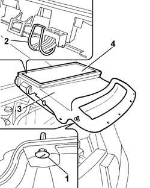

5010B09 PURIFYING FILTER (ANTIPOLLEN) FILTER ELEMENT - REPLACE
- Path
- Procedures > 50 AUXILIARY UNITS > 5010 HEATING/VENTILATION - MISCELLANEOUS > 5010B HEATING/VENTILATION AIR PIPES AND DUCTS > 5010B09 PURIFYING FILTER (ANTIPOLLEN) FILTER ELEMENT - REPLACE
- Kind
- repair procedure (removal / refitting; the operation number is the code)
- Applies to
- all engines; all production periods
- Interactive page
- https://sloeber94.github.io/elrnDB-fUlss/en/#/179007425
Applies to: all engines; all production periods
 Removing
Removing
 Refitting
Refitting1. Rotate the front fastening pins through 90°.
2. Release the rear clips.
3. Remove the climate control air intake.
4. Remove the pollen filter filter element from the air intake.

Applies to: all engines; all production periods
Refitting
Removing- Position the pollen filter filter element in the housing on the air intake.
- Position the climate control air intake.
- Attach the rear clips.
- Rotate the front fastening pins through 90°.